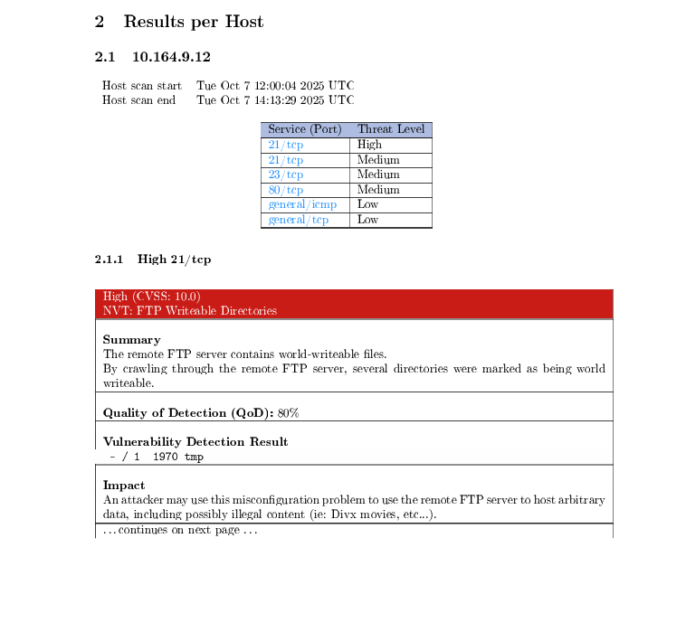

Déploiement du service OpenVAS
Contexte
À la suite de l’audit NIS2, l’entreprise souhaitait renforcer la sécurité de son infrastructure en identifiant les vulnérabilités présentes sur les systèmes et services.
OpenVAS a été retenu comme solution open-source afin de réaliser des scans de vulnérabilités sur différentes plateformes de production.
Objectifs
- Déployer OpenVAS sur une machine virtuelle
- Définir les zones de scan par plateforme
- Créer des groupes d’IP avec phpIPAM
- Configurer les cibles et les tâches de scan
- Lancer les scans et récupérer les rapports
- Stocker les résultats dans la documentation interne
Environnement technique
Travaux réalisés
Déploiement du service
Déploiement de l’OVA OpenVAS sur une machine virtuelle afin de mettre à disposition un service de scan de vulnérabilités.
Définition du périmètre
Découpage des scans par plateformes de production afin d’organiser les analyses et de limiter l’impact sur l’infrastructure.
Configuration des scans
Création des targets, définition des groupes d’IP, paramétrage des tasks et choix des configurations de scan.
Exploitation des résultats
Lancement des scans, récupération des rapports PDF et stockage des comptes rendus dans la documentation interne.
Documents associés
Procédure de lancement d’un scan
Procédure détaillant la création d’une target, la création d’une task, le lancement d’un scan OpenVAS et la récupération du rapport.
Documentation OpenVAS
Document expliquant le rôle d’OpenVAS, son architecture, les composants Greenbone, les NVTs, les rapports et la logique de gestion des vulnérabilités.
Exemple de rapport OpenVAS
Exemple de rapport généré après un scan OpenVAS. Le rapport présente les résultats par hôte, les ports concernés, le niveau de menace et le détail des vulnérabilités détectées.

Étapes d’exploitation
1. Création d’une target
Connexion à l’interface Greenbone, accès à la section Target puis création d’une cible contenant les hôtes ou sous-réseaux à scanner.
2. Création d’une task
Création d’une tâche associée à la target, avec configuration du scanner, du type de scan et des paramètres souhaités.
3. Lancement du scan
Démarrage de la tâche depuis l’interface OpenVAS, puis suivi de son état jusqu’à la fin de l’analyse.
4. Export du rapport
Une fois le scan terminé, consultation des résultats puis téléchargement du rapport au format PDF.
Points de vigilance
- Bien définir le périmètre de scan avant le lancement
- Ouvrir puis refermer les règles firewall nécessaires
- Planifier les scans pour limiter l’impact en production
- Classer les rapports pour assurer un suivi dans le temps
- Prioriser les vulnérabilités selon leur criticité
Résultats obtenus
Service opérationnel
- OpenVAS déployé sur VM
- Scans organisés par plateforme
- Rapports exploitables générés
- Service utilisé de manière périodique
Impact pour l’entreprise
Le service permet d’identifier les failles présentes dans l’infrastructure afin de prioriser les corrections et d’améliorer progressivement le niveau de sécurité.
Compétences mobilisées
- Mise à disposition d’un service informatique
- Administration système et réseau
- Sécurisation de l’infrastructure
- Déploiement d’une OVA sur VM
- Configuration d’un outil de scan
- Analyse et documentation des résultats
Bilan personnel
Cette mission m’a permis de découvrir le déploiement d’une appliance virtuelle et l’utilisation d’OpenVAS pour analyser les vulnérabilités d’une infrastructure.
J’ai également appris à organiser les scans par périmètre, à générer des rapports et à documenter une procédure d’exploitation claire pour l’équipe.